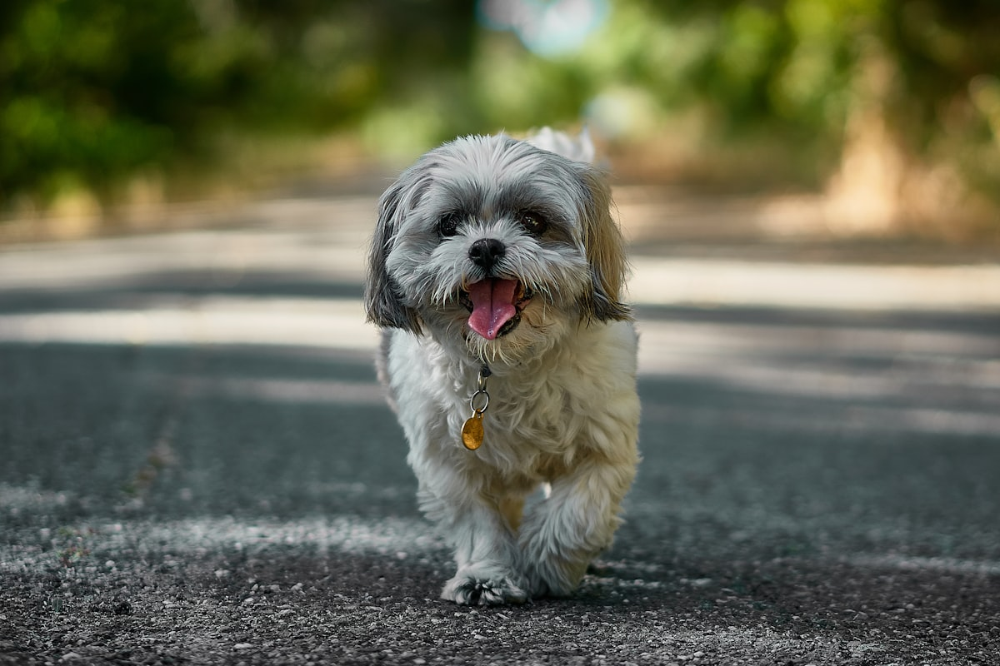

시츄 키우기 완벽 가이드 — 성격·수명·주의할 질병·관리법

시츄는 느긋하고 짖음이 적어 아파트·빌라 생활에 특히 잘 맞는 소형견입니다. 사람을 좋아하고 온순하지만, 코가 짧은 단두종 특성상 더위와 호흡기·안구 관리가 중요합니다. 성격부터 질병, 관리 포인트까지 정리했습니다.
한눈에 보는 시츄
| 크기 | 소형견 (체중 약 4~7kg) |
|---|---|
| 수명 | 약 12~16년 |
| 털빠짐 | 적음 (털이 계속 자라 정기 미용 필요) |
| 활동량 | 낮음 (짧은 산책으로 충분) |
| 짖음 | 적은 편 (아파트에 유리) |
| 초보자 적합도 | 높음 |
성격과 기질
시츄는 느긋하고 온화한 성격의 대명사입니다. 활동량 요구가 낮아 격한 산책 없이도 만족하고, 짖음이 적어 이웃 소음 걱정이 덜합니다. 사람을 좋아하고 무릎에 앉아 있는 것을 즐겨 "무릎 강아지"로 불리기도 합니다.
다만 고집이 있는 편이라 배변훈련 등은 인내심 있게 접근해야 합니다. 칭찬 기반 배변훈련을 일관성 있게 적용하면 좋습니다.
키우기 전에 계산해볼 것 — 월 고정비와 하루 일과
시츄를 키울 때 다른 소형견과 가장 크게 갈리는 항목은 미용비입니다. 털이 계속 자라는 구조라 미용이 선택이 아니라 고정 지출이 되기 때문입니다. 아래 금액은 체중 5kg 안팎의 성견 기준으로 흔히 잡는 범위이며, 지역과 업체에 따라 차이가 큽니다.
| 사료·간식 | 월 3만~6만원 |
|---|---|
| 미용 | 4~8주에 1회 4만~7만원 → 월 3만~5만원꼴 (6주 주기 기준) |
| 배변패드·소모품 | 월 2만~3만원 |
| 심장사상충·외부기생충 예방약 | 월 1만5천~2만원 |
| 병원 적립 | 월 3만~5만원 (접종·연 1회 검진 대비) |
| 대략적인 합계 | 월 13만~21만원선 |
하루 일과는 의외로 가볍습니다. 산책은 20~30분씩 하루 한두 번이면 충분하고, 비 오는 날 한 번쯤 건너뛰어도 스트레스를 크게 받지 않습니다. 대신 매일 들어가는 손이 따로 있습니다. 빗질 5~10분, 눈가와 코 위 주름 닦기 1분, 양치. 산책 시간은 짧은데 손질 시간은 긴 구조라고 이해하면 맞습니다.
주거 환경 면에서는 소형견 중에서도 손에 꼽히게 무난합니다. 짖음이 적어 층간소음 부담이 작고, 실내에서 도는 정도로 활동량이 채워져 원룸이나 아파트에도 잘 맞습니다. 다만 사람 곁에 붙어 있으려는 성향이 있어 혼자 있는 연습은 처음부터 시켜야 합니다. 6~8시간 정도는 적응하지만, 처음부터 긴 시간을 혼자 두면 분리불안으로 굳어질 수 있습니다. (분리불안 자가진단과 단계별 훈련)
주의해야 할 질병
- 단두종 증후군(호흡기) — 코가 짧아 더위·흥분 시 호흡이 힘들 수 있습니다. 비만이 되면 더 악화되니 체중 관리가 중요합니다.
- 안구 질환 — 눈이 크고 돌출돼 각막 손상·건성각결막염 등이 잘 생깁니다. 눈 주변 털 관리와 정기 관찰이 필요합니다.
- 슬개골 탈구 — 소형견 공통. (슬개골 탈구 대처법)
- 피부·귀 질환 — 접힌 피부와 늘어진 귀에 습기가 차기 쉬워 관리가 필요합니다.
- 치주 질환 — 소형견 공통. 양치 습관을 들이세요.
관리 포인트 (털·눈·더위)
털
털이 계속 자라 한 달~두 달 간격 미용이 필요하고, 매일 빗질로 엉킴을 막아야 합니다. 눈 주변 털은 짧게 유지해 눈 찔림을 예방하세요.
눈
매일 눈가를 부드럽게 닦아주고, 충혈·눈곱·눈물 증가가 보이면 안과 진료를 받으세요.
더위
단두종이라 여름 열사병 위험이 큽니다. 한낮 산책을 피하고 시원한 환경을 유지하세요. (열사병 관리법) 급여량은 계산기로 확인해 비만을 예방하세요.
미용·빗질 실전 — 컷 종류와 비용
시츄의 털은 빠지는 대신 계속 자랍니다. 모질도 일반적인 개털보다 사람 머리카락에 가까워서, 자르지 않으면 바닥에 끌릴 만큼 길어집니다. 털이 안 빠져 편하다는 말은 반은 맞고 반은 틀린 셈입니다.
매일 빗질에서 놓치기 쉬운 것
겉털만 쓸어내리면 속에서 조용히 엉킵니다. 겉으로는 멀쩡해 보이다가 미용실에 갔을 때 "밀 수밖에 없다"는 말을 듣는 상황이 여기서 나옵니다. 핀 브러시로 털을 층층이 들어 올리며 뿌리부터 빗어 내려오는 방식으로 하고, 마지막에 스틸 콤이 걸림 없이 통과하는지 확인하면 확실합니다. 특히 귀 뒤, 겨드랑이, 뒷다리 안쪽, 하네스가 닿는 자리, 항문 주변을 먼저 보세요.
어떤 컷을 선택할까
- 퍼피컷 — 전신을 2~3cm로 고르게 남기는 컷. 관리 난이도와 모양의 균형이 가장 좋아 초보 보호자에게 무난합니다.
- 스포팅(짧은 클리핑) — 여름철이나 엉킴이 심할 때. 빗질 부담이 확 줄지만 자라는 동안 모양이 어정쩡한 기간이 있습니다.
- 장모 유지 — 쇼독 스타일. 매일 빗질에 랩핑까지 필요해 일반 가정에서는 권하기 어렵습니다.
미용 주기는 4~8주, 전체 미용이 4만~7만원, 발바닥·항문·눈앞만 정리하는 위생 미용이 1만5천~3만원 정도입니다. 엉킴이 심하면 추가 요금이 붙습니다. 목욕은 2~4주에 한 번이면 충분하고, 귀 안쪽·발가락 사이·겨드랑이가 덜 마른 채로 남지 않게 끝까지 말리는 것이 중요합니다. 늘어진 귀 구조상 습기가 남으면 외이염으로 이어지기 쉽습니다. (강아지 외이염 증상과 귀 청소법)
눈앞 털은 짧게 자르거나 위로 묶어 눈을 찌르지 않게 합니다. 묶을 때 너무 세게 당기면 눈매가 당겨져 오히려 자극이 되니 느슨하게 하세요. 코 위 주름 사이에는 물이나 사료 부스러기가 잘 남으니 부드러운 거즈로 닦고 물기를 없애주고, 발바닥 털이 길어 미끄러지면 슬개골에 부담이 가므로 함께 정리합니다.
훈련과 사회화 — 고집 있는 아이 다루기
시츄는 머리가 나쁜 게 아니라 같은 걸 반복하는 데 금방 흥미를 잃습니다. "열 번 시키면 다섯 번째부터 딴청"이 흔한 반응이라, 훈련은 3~5분씩 짧게 하루 여러 번이 정석입니다. 30분 붙잡고 하면 서로 지치기만 합니다.
다행히 먹는 것에 대한 반응은 좋은 편입니다. 하루 사료의 일부를 따로 덜어 훈련용 보상으로 쓰면 간식 열량을 늘리지 않으면서 동기를 만들 수 있습니다. 보상은 행동 직후 3초 안에 줘야 무엇 때문에 칭찬받는지 연결됩니다.
배변훈련이 유난히 오래 걸린다는 이야기가 많은데, 소형견 공통의 작은 방광에 시츄 특유의 마이페이스가 더해진 결과에 가깝습니다. 실수를 혼내면 "보호자 앞에서 싸면 안 된다"로 잘못 학습해 숨어서 하는 쪽으로 갑니다. 성공에만 반응해 주세요. (칭찬 기반 배변훈련)
사람은 잘 따르지만 다른 개를 만난 경험이 적으면 겁을 먹고 짖는 경우가 있습니다. 사회화가 가장 잘 되는 시기는 생후 3~14주로, 접종을 다 마칠 무렵이면 이 창이 거의 닫힙니다. 그래서 접종이 끝나기를 기다리기보다, 이 시기에 안전한 방법으로 노출을 만들어 주는 편이 낫습니다. 바닥에 내려놓는 산책 대신 안고 나가 바깥 소리와 풍경을 보여주기, 집으로 사람을 초대하기, 접종을 마친 건강한 개와만 만나게 하기 정도면 충분합니다. 미끄러운 마루, 계단, 엘리베이터, 드라이어 소리처럼 앞으로 매일 겪을 것들도 이때 익숙해지면 좋습니다.
짖음 자체는 적은 편이지만, 안아달라거나 간식을 달라고 짖을 때마다 들어주면 그 방식이 통한다고 학습해 요구성 짖음이 자리 잡습니다. 조용해진 순간에 반응해 주는 쪽으로 바꾸면 대부분 줄어듭니다. (짖음 교정 원인별 훈련법)
생애 주기별로 달라지는 관리
퍼피 (~12개월)
성장판이 닫히기 전이라 소파에서 뛰어내리는 습관부터 막아야 합니다. 시츄는 다리가 짧아 착지 충격이 무릎에 그대로 갑니다. 마룻바닥에는 미끄럼 방지 매트를 깔고, 계단 대신 낮은 스텝을 놓아주세요. 첫 미용은 생후 3~4개월경 위생 미용부터 가볍게 시작하는 것이 적응에 좋습니다.
성견 (1~7세)
이 시기 최대 리스크는 단연 체중입니다. 5kg이던 아이가 6kg이 되면 20% 증가인데, 단두종의 호흡 부담과 무릎 부담에 그대로 반영됩니다. 월 1회 갈비뼈를 만져 확인하고, 급여량은 사료 급여량 계산기로 기준을 잡으세요. 양치는 이 시기에 습관으로 자리 잡아야 노령기에 치아를 지킬 수 있습니다. (강아지 양치질 하는 법)
노령기 (8세~)
눈이 돌출된 구조라 각막 손상과 백내장 등 안구 변화가 비교적 이른 나이에 나타날 수 있습니다. 부딪히는 일이 잦아지거나 어두운 곳에서 머뭇거리면 안과 진료를 받아보세요. 코골이나 거친 숨소리가 예전보다 눈에 띄게 심해진 것도 그냥 넘길 신호가 아닙니다. 잇몸이나 혀 색이 푸르스름해지거나 숨쉬기를 힘들어하면 즉시 병원으로 가야 합니다. 마취가 필요한 스케일링 등은 심장·호흡 상태를 먼저 평가한 뒤 결정하게 됩니다.
시츄 보호자가 흔히 저지르는 실수
- 목줄을 목에 채운다 — 단두종은 기도가 이미 좁습니다. 목을 조이는 형태보다 가슴에 힘이 분산되는 하네스가 안전합니다.
- 헐떡임을 "더워서 그렇지"로 넘긴다 — 시츄에게 과도한 헐떡임은 체온 조절 실패의 신호일 수 있습니다. 혀 색이 어두워지거나 침을 많이 흘리고 비틀거리면 응급 상황이니 즉시 병원으로 가세요. (여름철 열사병 관리법)
- 미용을 미루다 밀어버리기를 반복한다 — 4~8주 주기를 놓쳐 엉킴이 심해지면 결국 짧게 미는 수밖에 없고, 비용도 추가되고 아이도 힘들어집니다. 주기를 지키는 편이 결국 싸게 먹힙니다.
- 눈앞 털을 그냥 둔다 — 자란 털이 계속 각막을 스치면 상처가 납니다. 눈곱이나 눈물이 늘었다면 이미 자극받고 있다는 뜻입니다.
- 간식으로 애정을 표현한다 — 5kg 소형견의 하루 필요 열량은 크지 않아서, 간식 몇 개가 하루 열량의 20~30%를 차지하기도 합니다. 애정 표현은 산책이나 놀이로 바꿔보세요.
이런 분께 잘 맞아요
- 조용하고 느긋한 소형견을 원하는 분
- 소음에 민감한 주거 환경에 사는 분
- 격한 운동보다 실내 교감을 즐기는 분
자주 묻는 질문 (FAQ)
Q. 시츄는 왜 아파트에 좋나요?
짖음이 적고 활동량 요구가 낮아 실내 생활에 잘 맞습니다. 느긋한 성격이라 바쁜 보호자에게도 무난합니다.
Q. 더위에 약한가요?
네, 단두종이라 여름철 열사병에 취약합니다. 한낮 산책을 피하고 에어컨·쿨매트로 시원하게 유지하세요.
Q. 눈 관리가 중요하다던데요?
눈이 크고 돌출돼 각막 손상·안구 질환이 잘 생깁니다. 눈 주변 털 관리와 매일 눈가 닦기, 이상 시 안과 진료가 필요합니다.
Q. 미용은 얼마나 자주, 얼마나 들까요?
4~8주에 한 번이 일반적입니다. 전체 미용 4만~7만원, 위생 미용 1만5천~3만원 정도로 잡으면 되고 엉킴이 심하면 추가 요금이 붙습니다. 월 고정비로 환산하면 3만~5만원쯤 됩니다.
Q. 털이 안 빠지니 관리가 쉬운 편인가요?
빠지는 털은 적지만 대신 계속 자랍니다. 미용비가 고정으로 들고 매일 빗질도 필요해서, 총 관리 부담은 오히려 단모 소형견보다 큽니다. 청소가 편한 것과 관리가 쉬운 것은 다릅니다.
Q. 산책은 하루에 얼마나 시켜야 하나요?
20~30분씩 하루 한두 번이면 충분합니다. 활동량 요구가 낮은 견종이라 무리한 운동은 오히려 호흡에 부담이 됩니다. 여름에는 아스팔트가 식은 이른 아침이나 늦은 저녁으로 옮기세요.